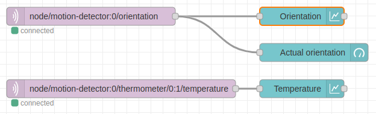
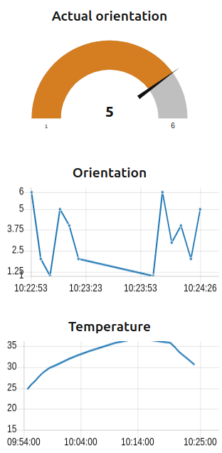

Prostředí Hardwario Playground
🧑💻 Trvání: 30 minut
🎯 Cílová skupina: pro jednotlivce i malé skupiny
Úvod do vizuálního programování
Playground umožňuje programování přetahováním bloků a okamžitě reaguje na připojené moduly.
Začínáme s Hardwario Playgroundem
Ověřte si, že máte z předchozí lekce vše připraveno:
- ✅ Playground je spuštěný
- ✅ Dongle je připojený
- ✅ PIR senzor má baterie
- ✅ V Messages vidíte výstupy z PIR senzoru
První program
Vytvořte program pro zpracování výstupů z PIR modulu.
Tento text není úplná dokumentace Node-RED. Doporučujeme oficiální příklady.
Úkol: Připravte přehledový dashboard s následujícími prvky:
- 🧭 Měřidlo (gauge) pro orientaci PIR modulu
- 📈 Graf orientace v čase
- 🌡️ Graf teploty v čase
Dbejte na popisky os – osa X pro čas, osa Y pro hodnotu.
Ukázkové řešení
Funkce pro zpracování dat z PIR modulu:

Výsledný dashboard:

Shrnutí
Už umíte připojit moduly, sledovat jejich výstupy a zobrazit je graficky.
Zkuste připojit Climate Module a sledovat tlak, vlhkost nebo světlo.
PIR modul byl použit pro orientaci a teplotu. Jeho detekce pohybu je méně vhodná pro rychlé testování, ale můžete ji zkusit, pokud je v okolí klid.